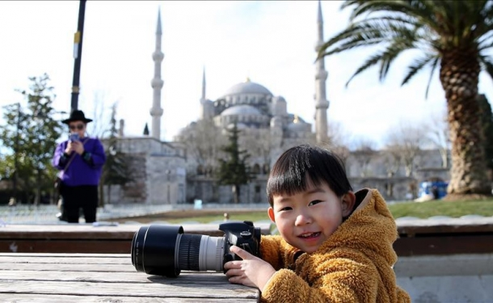

وصلت ولاية أنطاليا التركية، أول قافلة من السياح الروس،
خلال تموز/ يوليو الفائت، بلغ نحو مليون سائح، رغم محاولة الانقلاب الفاشلة التي قامت بها منظمة "فتح الله غولن (الكيان الموازي)" الإرهابية. وبحسب معطيات جمعتها الأناضول، فقد زار إسطنبول وحدها نحو 4.5 مليون سائح، خلال الأشهر الستة الأولى من العام الجاري. وقال رئيس اتحاد الوكالات السياحية التركية "باشاران أولوصوي"، للأناضول، إن" عودة العلاقات الدبلوماسية بين روسيا وتركيا، من خلال فتح قنوات الحوار بينهما، كما كانت في السابق، سينعكس إيجاباً على قطاع السياحة، لا سيما بعد زيارة الرئيس رجب طيب أردوغان موسكو". ورأى أنه" وفق إحصائيات وزارة السياحة المعلنة فإن عدد السياح الوافدين إلى تركيا خلال الأشهر الستة الأولى من العام الجاري، بلغ 10 ملايين و740 ألفًا، منهم 690 ألفًا، قدموا من منطقة الشرق الأوسط ودول الخليج". وعقب المحاولة الإنقلابية الفاشلة، أعلن وزير الثقافة والسياحة التركي، نابي أوجي، اعتزام بلاده "تطوير العلاقات مع الدول العربية" في المجال السياحي، وأنه جرى خلال لقاء جمعه مع رئيس المنظمة العربية للسياحة، بندر بن فهد آل فهيد، في أنقرة، بحث مشاريع مستقبلية جديدة. يُذكر أن عدد الزوار الأجانب الوافدين إلى عموم تركيا خلال العام الماضي بلغ 36 مليونًا و245 ألفًا، بينهم 4 ملايين و655 ألفًا من الشرق الأوسط ودول الخليج، بحسب وزارة السياحة. وتحتل مدينة إسطنبول منذ مئات السنين مكانة مرموقة بين المراكز الثقافية والتاريخية والسياحية في العالم، فقد احتضنت الحضارتين البيزنطية والعثمانية إلى جانب كونها جسراً يصل جغرافياً وثقافياً بين قارتي آسيا وأوروبا، وقد أصبحت المدينة في الآونة الأخيرة مركزاً سياحياً هاماً بالنسبة لبلدان الشرق الأوسط. ويشكل قطاع السياحة في تركيا دخلا مهمًا للاقتصاد، ويواصل تقدمه رغم الأحداث التي تشهدها المنطقة، حيث تستمر مدينة اسطنبول، ببقائها وجهة لاهتمام السياح من الداخل والخارج. وشهدت العاصمة أنقرة ومدينة إسطنبول، منتصف يوليو/تموز الماضي، محاولة انقلاب فاشلة نفذتها عناصر محدودة من الجيش، تتبع لمنظمة "فتح الله غولن"، حاولوا خلالها السيطرة على مفاصل الدولة ومؤسساتها الأمنية والإعلامية. وقوبلت المحاولة الانقلابية باحتجاجات شعبية عارمة في معظم المدن والولايات التركية؛ إذ توجه المواطنون بحشود غفيرة تجاه البرلمان ورئاسة الأركان بالعاصمة، والمطار الدولي بمدينة إسطنبول، ومديريات الأمن في عدد من المدن، ما أجبر آليات عسكرية كانت تنتشر حولها على الانسحاب مما ساهم بشكل كبير في إفشال المخطط الانقلابي. جدير بالذكر أن عناصر منظمة "فتح الله غولن" الإرهابية - غولن يقيم في الولايات المتحدة منذ عام 1999- قاموا منذ أعوام طويلة بالتغلغل في أجهزة الدولة، لا سيما في الشرطة والقضاء والجيش والمؤسسات التعليمية، بهدف السيطرة على مفاصل الدولة، الأمر الذي برز بشكل واضح من خلال المحاولة الان